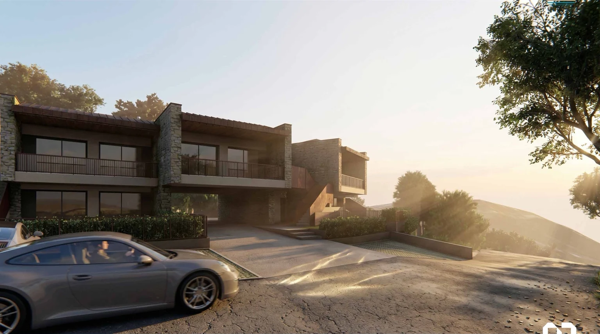
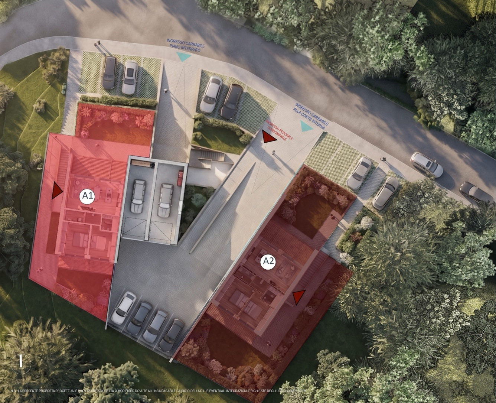
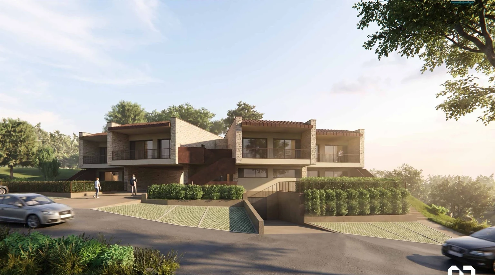
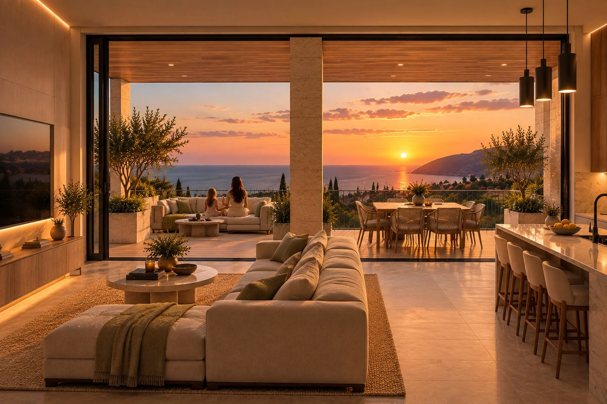
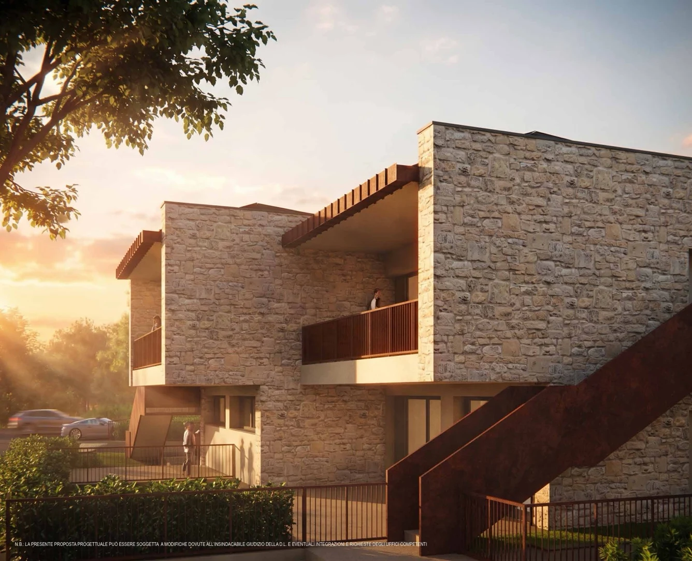
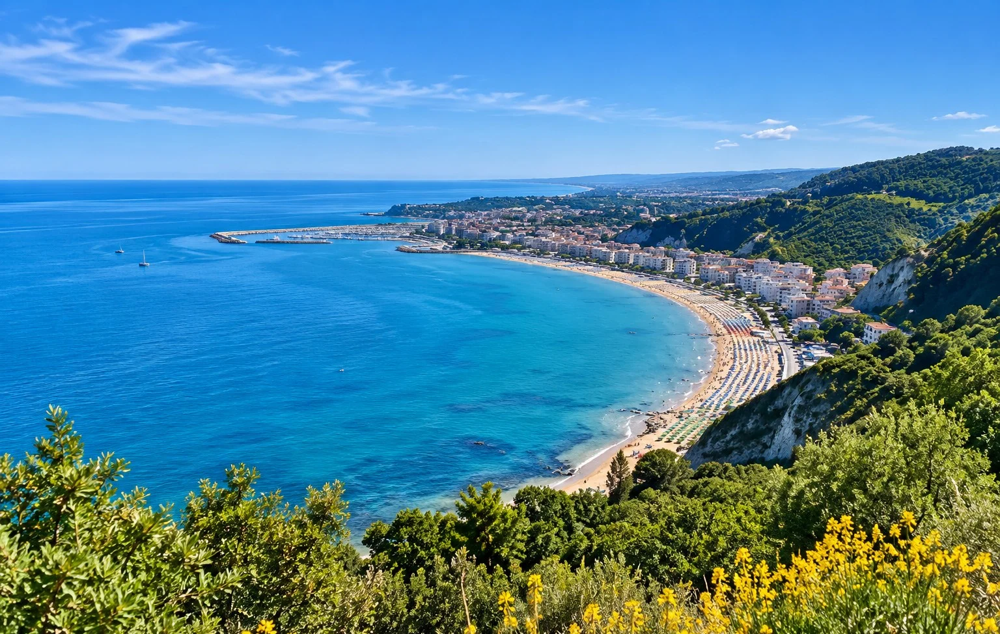
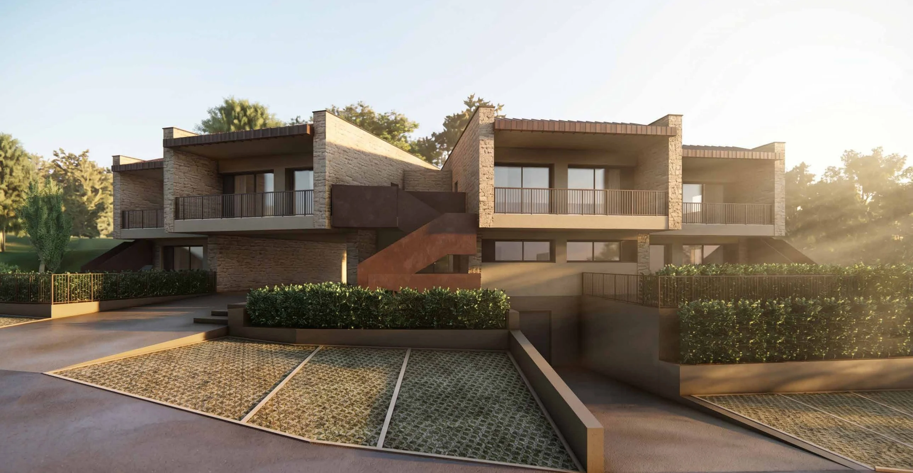
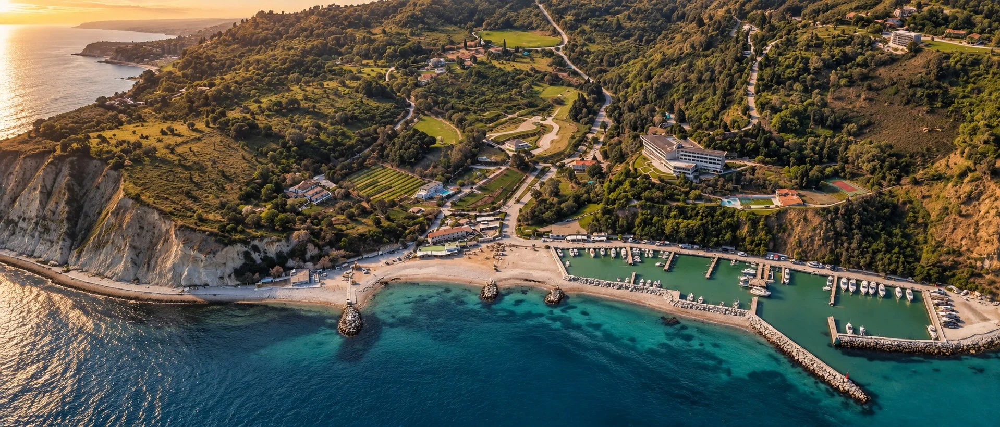

Il privilegio di vivere il mare.
Da una prospettiva unica.
Residenze esclusive a Gabicce Monte, dove architettura contemporanea, natura e panorami sull’Adriatico si incontrano. Un luogo da vivere, un patrimonio da custodire.
Architettura esclusiva.
Panorami da vivere.
Residenze di nuova costruzione, progettate per offrire comfort, privacy e una relazione privilegiata con il paesaggio.
A partire da € 690.000

Residenza A1
La zona giorno si apre sul giardino privato: uno spazio da vivere, dentro e fuori casa.

Superfici da elaborati di progetto, non commerciali. * Un bagno e un bagno/lavanderia. Prezzo e dotazioni della singola unità da confermare.
Entra nella tua
futura casa.
Percorri gli ambienti delle residenze come se fossi già lì.

Riservato per natura.
Connesso a tutto.
La tranquillità di Gabicce Monte, con la Riviera, i borghi storici e i servizi a breve distanza.
Gabicce Monte
Il punto da cui partire: il borgo sul promontorio, tra il mare e il verde del San Bartolo.
Schema territoriale indicativo. Il punto identifica Gabicce Monte, non l’ubicazione esatta del cantiere.
Il lusso più autentico
è scegliere come vivere.
Il tempo per sé. Le giornate con chi ami. Il piacere di un tramonto senza programmi.
Una residenza a Gabicce Monte è anche questo: la libertà di ritrovare il proprio equilibrio.

È vivere meglio.

Ogni dettaglio,
pensato intorno a te.
Dalla scelta delle finiture alla definizione degli ambienti, ti accompagniamo nella creazione di una casa che rispecchi il tuo stile.
Un unico riferimento per rendere ogni passaggio più semplice.
Personalizza
Interni, arredi e dettagli su misura.
Vivi
Una casa pronta ad accoglierti.
Valorizza
Servizi di gestione e locazione quando non utilizzi la proprietà.
Servizi da concordare: disponibilità, condizioni e distinzione tra incluso e opzionale saranno confermate nella proposta.
Tu pensa a viverla.
Al resto pensiamo noi.

Ci sono luoghi che visiti.
E luoghi a cui appartieni.
Immagina di aprire le finestre e ritrovare il mare. Di vivere giornate senza fretta, tra natura, comfort e momenti da condividere.
A Gabicce Monte, ogni ritorno diventa il piacere di sentirsi a casa.
Scopri le residenze ↗Una scelta da vivere.
Un valore da custodire.
Una posizione panoramica, un progetto contemporaneo e un numero limitato di residenze.
Caratteristiche che rendono questa proprietà una scelta distintiva, sia per il piacere di abitarla sia in una prospettiva patrimoniale di lungo periodo.
Le case si possono costruire.
Le posizioni no.

La qualità si vede.
E si approfondisce.
Oltre le immagini, tutti gli elementi per valutare la tua prossima casa.
Progetto e qualità costruttiva ＋
Richiedi il capitolato, le informazioni sull’impresa realizzatrice e le specifiche dei materiali. Le texture presenti nella sezione residenze rappresentano la palette progettuale.
Comfort e prestazioni energetiche ＋
Impianti, isolamento e classe energetica saranno precisati nella scheda tecnica della residenza. Richiedi la documentazione per approfondire prestazioni e dotazioni.
Garanzie e tempi di consegna ＋
Durante la presentazione del progetto potrai richiedere lo stato dei lavori, le tempistiche e la documentazione sulle garanzie applicabili alla compravendita.

Un luogo da vivere.
Un patrimonio da custodire.
Il tuo prossimo capitolo
inizia qui.
Scopri da vicino le residenze Prestige Gabicce Monte. Richiedi una presentazione riservata del progetto, le planimetrie e le disponibilità.